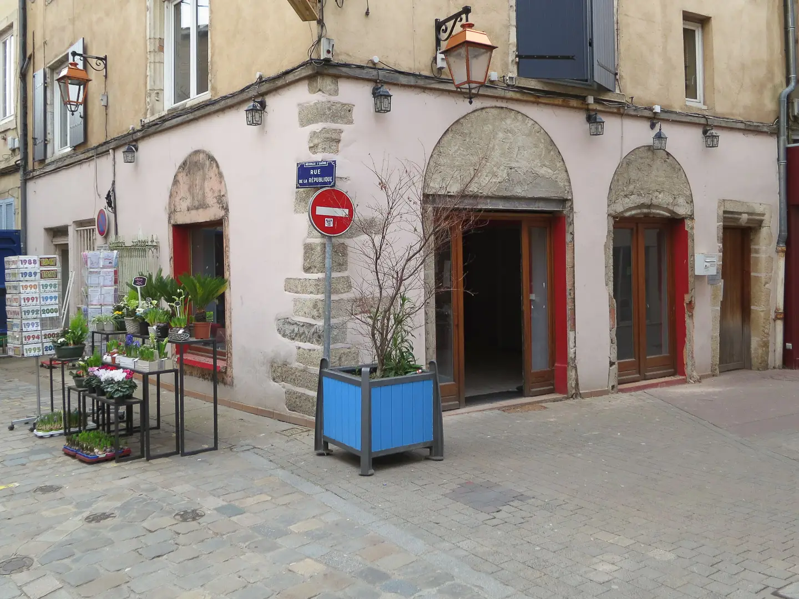
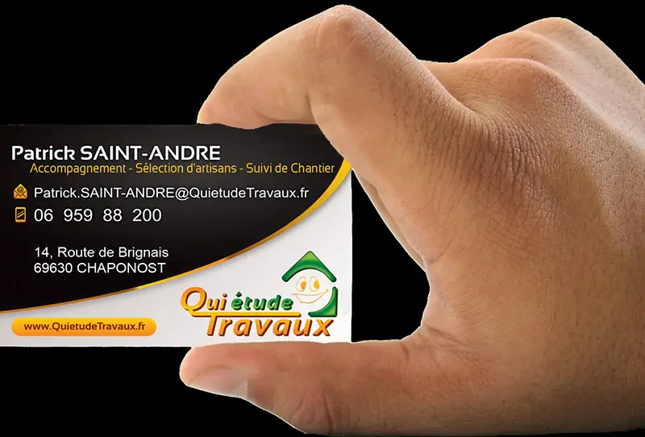

Des artisans sélectionnés, un interlocuteur unique, une transparence totale — pour des travaux sereins et de qualité.

Vous voulez connaître des artisans de qualité, sérieux et sélectionnés ?
Vous cherchez un interlocuteur unique pour vous aider jusqu'au suivi de chantier et à la réception des travaux ?
Vous appréciez la transparence, comprendre tous les détails des devis et connaitre les entreprises avant de vous engager plus avant ?
Vous avez un projet de rénovation d'un local professionnel ou d'un logement, sur la région de Lyon ou de l'Ouest-Lyonnais ?
Mais surtout, suffisamment expérimentés, pour savoir que sans l'humain,…
… on ne va pas bien loin.

Nous sommes une société de plus de 10 ans (créée en 2013), œuvrant dans Lyon et l'ouest lyonnais.
L'unique but étant d'éviter les surprises (rarement bonnes) grâce à la meilleure préparation possible des travaux, avant tout engagement de votre part.
Des travaux de rénovation bien préparés, sont à moitié exécutés !
Même si une excellente préparation est primordiale, grâce à notre travail et au choix d'artisans sérieux et bien sélectionnés, en prime de travaux réfléchis et bien préparés, nous nous sommes aperçu, que cela n'évitait que 60% des problèmes. En effet, l'évidence pour les clients n'est pas toujours la même, que le bon sens des artisans.
Conjointement, la communication entre artisans ne va pas toujours de soi.
Après seulement 3 ans d'activités, une offre d'Assistance à Maîtrise d'Ouvrage a donc été mise en place, afin d'assurer un suivi depuis le tout premier rendez-vous, jusqu'à la réception des travaux.
Un seul interlocuteur, informé de toutes les modifications en cours de projet, puis durant les travaux, et qui vous accompagne en dépensant toute son énergie, pour le meilleur déroulement possible
C'est nous, Qui'étude Travaux
En savoir plusPour tous les travaux, qui concernent le bâtiment, intérieur ou extérieur, du gros oeuvre à la finition.
Grâce aux spécialités de nos partenaires allant des bureaux d'études techniques et d'ingénierie (structure, thermiques, géotechniques), en passant par les entreprises de gros-oeuvre (maçon, étancheur, charpentier, couvreur) et bien sûr jusqu'aux artisans plus classiques (chauffagiste, plombier, électricien, plâtrier, carreleur, peintre, menuisier, etc.).
Nous avons même des partenariats pour valoriser les projets éligibles au dispositif des Certificats d'Économies d'Énergie (CEE), afin de réduire le coût des travaux de rénovation thermique (les établissements professionnels sont également concernés).
Majoritairement pour de travaux de rénovation, plus difficiles et complexes que les travaux de construction neuves, et donc nécessitant des artisans réellement expérimentés.
Pour tous les travaux concernant le bâti, jusqu'à la cuisine et au dernier coup de pinceau, mais avec des spécialités :
En grande partie pour des établissements professionnels (commerces, bureaux, entreprises, clubs, magasins, cabinets médicaux, etc.), mais également pour des maisons ou des appartements.
Bureaux, commerces, cabinets, restaurants — des travaux adaptés aux exigences professionnelles.
DécouvrirMurs porteurs, charpentes, fondations — des interventions structurelles complexes.
DécouvrirIsolation, chauffage, ventilation — pour un confort optimal et des économies d'énergie.
DécouvrirNous faisons comme pour nous et de façon générale, nous n'aimons ni les surprises, ni les choses faites trop rapidement.
Un dossier est fourni sur chaque entreprise avec des avis sur les artisans, leurs assurances, les attestations de leurs qualifications, etc.
Chaque ligne des devis est expliquée et justifiée. Les devis sont ceux des artisans en direct, pas de la sous-traitance intégrée dans un devis global.
Avant le projet : Au travers d'artisans de qualité, mais, de surcroit, spécialisés dans leur domaine (nous bannissons les entreprises « Tous Corps d'État » et les « Entreprises Générales du Bâtiment »).
Dans la première phase du projet : Par une bonne préparation, ainsi que grâce à des devis détaillés et compris par le maître d'ouvrage.
Durant les travaux : Avec le suivi de chantier, ainsi qu'une communication réelle entre les différents intervenants y compris le donneur d'ordre (vous)
La qualité de la relation, avec les personnes que nous accompagnons, bien entendu, mais également avec les artisans, est primordial. Cela nous permet de leur demander des faveurs, pour limiter ou supprimer l'impact d'imprévus sur le chantier.